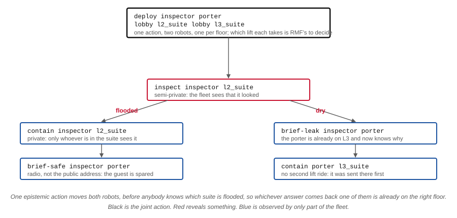
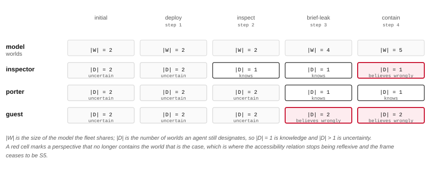
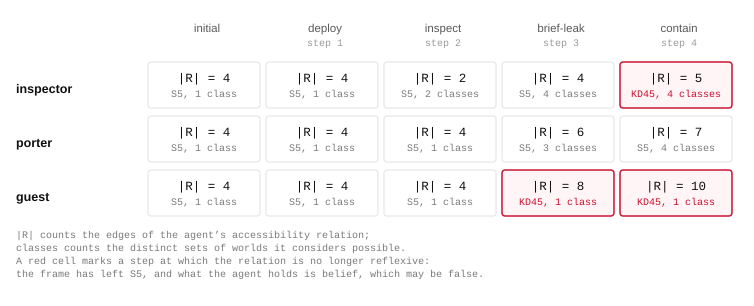
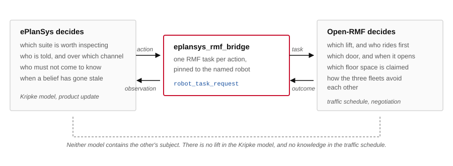

Open-RMF · KD45 belief · ROS 2
An epistemic policy was executed over an Open-RMF fleet across three floors of a hotel, and the state of the agents' knowledge was measured after every action. The run ends with two of the three agents holding beliefs the world contradicts. Each of those beliefs is attributable to a single action, and the accessibility relation of the agent concerned stops being reflexive at exactly that step, which is the formal signature of the frame leaving \(\mathrm{S5}_n\) for \(\mathrm{KD45}_n\).
Planned by Aletheia over hotel-incident.epddl, executed by eplansys on PlanSys2, dispatched to Open-RMF by eplansys-rmf. All figures below are generated from the measured run.
The problem
A leak is in one of two suites, l2_suite and l3_suite, on separate floors. Its location is settled in the world and unknown to the fleet, so the initial model has two worlds and designates both. Three agents participate: an inspector and a porter, each bound to a robot, and a guest, which is an agent of the model with no robot and no actions available to it.
The goal is the conjunction
(:goal (and (safe)
([porter] (safe))
(<Kw. guest> (leak-at l2_suite))))whose three conjuncts constrain the plan in three different ways. The first is ontic and requires the leak to be shut off, which carries a modal precondition: an agent may close a valve only in a suite it knows to be flooded, so the plan must contain an act of sensing. The second requires the porter to come to know an ontic fact. The third requires the guest to remain uncertain about the location, and it is this conjunct that removes the public address system from the admissible plans.
The action library is the intermediate set. Movement is public-ontic; inspection is semi-private-sensing, so the fleet observes that an inspection occurred and does not observe its outcome; containment is private-ontic and is observed only by agents in the suite; the radio is quasi-private-announcement and the public address system is public-announcement.
The policy
Aletheia solved the instance by AO* search at depth 4, expanding 15 164 nodes and generating 16 796. The result was validated over two leaves and six branches. The executor rendered it as a tree of six nodes.

Three properties of this policy follow from the goal alone. The root commits both robots to different floors before the leak's location is known, which places one of them on the correct floor under either outcome. The private radio carries the finding, since a public announcement would falsify the third conjunct. The dry branch closes the valve with the porter, which is already on the floor the inspection implicates, so the solution contains no second lift traversal.
A policy is a sequence of product updates and the executor renders it as a Sequence node, so two consecutive move actions produce two robots moving one after another. Simultaneous motion requires a single event that relocates several agents, which the domain provides as deploy:
(:event e-deploy
:parameters (?i ?j - agent ?from-i ?to-i ?from-j ?to-j - zone)
:precondition
(and (at-ag ?i ?from-i) (at-ag ?j ?from-j)
(adjacent ?from-i ?to-i) (adjacent ?from-j ?to-j)
(/= ?i ?j) (/= ?to-i ?to-j))
:effects
(:and (not (at-ag ?i ?from-i)) (at-ag ?i ?to-i)
(not (at-ag ?j ?from-j)) (at-ag ?j ?to-j)))The bridge submits one RMF task per agent named in such an action and holds the PlanSys2 action open until every task reports completion, failing the action as soon as any one of them fails.
Execution
Wall-clock time for each action, from the moment the bridge submitted it to the moment the epistemic state applied the corresponding update:
| step | action | execution | |W| | |D| inspector | |D| porter | |D| guest |
|---|---|---|---|---|---|---|
| 0 | initial state | — | 2 | 2 | 2 | 2 |
| 1 | deploy | 484.5 s | 2 | 2 | 2 | 2 |
| 2 | inspect | 1.0 s | 2 | 1 | 2 | 2 |
| 3 | brief-leak | 4.3 s | 4 | 1 | 1 | 2 |
| 4 | contain | 13.0 s | 5 | 1 | 1 | 2 |
The joint move accounts for 96 % of the 505.8 s execution time. It comprises two lift traversals across three levels, performed concurrently, and Open-RMF resolved a traffic conflict between the two robots on the way out of the lobby and assigned each of them a lift. The epistemic work that follows occupies 18.3 s in total.
Measurement
The run was replayed against a standalone epistemic state, and after each action three quantities were recorded for every agent: the number of worlds in its perspective, the number of worlds it designates, and whether that perspective contains the world that is the case. The accessibility relation was recorded with them, which permits the frame property to be checked directly.

Two features of this table carry the argument. The size of the shared model increases from two worlds to five, and it does so at the two steps where only part of the fleet observes what happened. A private announcement introduces the distinction between a world in which the message was sent and a world its non-recipients continue to inhabit; a private ontic action introduces the distinction between a world in which the valve is closed and a world in which the agents that did not see it still believe it open.
The second feature is the red cells. At step 3 the guest's perspective ceases to contain the actual world, and at step 4 the inspector's does the same. Both agents continue to designate worlds and to satisfy every formula those worlds support, and both are wrong.

Figure 5. Each agent's accessibility relation, stepped through the run. Nodes are worlds and arcs are the relation; a red ring marks a world the agent designates, and a world drawn faintly is one the model does not yet contain. An agent whose panel reports that it excludes the actual world has lost the self-loop there.
In the initial model all three relations are the complete graph on two worlds, and every agent designates both. After the inspection the inspector's relation has lost the arc between them and designates one, while the relations of the porter and the guest are unchanged: the fleet observed that an inspection took place and did not observe what it found.
After step 3 the guest's relation has no self-loop at the actual world, and after step 4 the inspector's has none either. Reflexivity is the property that makes knowledge factive, so its loss is what allows an agent to be mistaken. This is measured directly:
| step | inspector | porter | guest |
|---|---|---|---|
| initial | reflexive | reflexive | reflexive |
| 1 · deploy | reflexive | reflexive | reflexive |
| 2 · inspect | reflexive | reflexive | reflexive |
| 3 · brief-leak | reflexive | reflexive | irreflexive |
| 4 · contain | irreflexive | reflexive | irreflexive |
The frame of the reachable state space is therefore \(\mathrm{S5}_n\) through step 2 and \(\mathrm{KD45}_n\) thereafter. The transition occurs during execution, and it is caused by actions the plan selected.
Verification
A goal is a formula of the modal language and a model either satisfies it or does not, but the bare verdict discards the quantity that decides it. The semantics assigns a formula its extension
\([\![\varphi]\!]^{\mathcal{M}} = \{w \in W : \mathcal{M}, w \models \varphi\}, \qquad [\![K_i\varphi]\!] = \{w : R_i(w) \subseteq [\![\varphi]\!]\},\)
and the goal is satisfied exactly when \(W^{*} \subseteq [\![\gamma]\!]\). Extension and containment are what is reported below. They are computed by the labelling algorithm, which evaluates every subformula bottom-up over the subformula order in \(O(|\mathrm{Sub} (\gamma)| \cdot (|W| + |R|))\), on the models recorded during the run. Every verdict the executor reported is reproduced, which is what licenses reading the rest of the figure.
| subformula | 0initial state|W| = 2 | 1deploy|W| = 2 | 2inspect|W| = 2 | 3brief-leak|W| = 4 | 4contain|W| = 5 |
|---|---|---|---|---|---|
| \(\texttt{safe}\) | |||||
| \(K_{\texttt{porter}}\,\texttt{safe}\) | |||||
| \(\texttt{leak-at}\_\texttt{l2}\_\texttt{suite}\) | |||||
| \(\neg \texttt{leak-at}\_\texttt{l2}\_\texttt{suite}\) | |||||
| \(\mathit{Kw}_{\texttt{guest}}\,\texttt{leak-at}\_\texttt{l2}\_\texttt{suite}\) | |||||
| \(\neg \mathit{Kw}_{\texttt{guest}}\,\texttt{leak-at}\_\texttt{l2}\_\texttt{suite}\) | |||||
| \(K_{\texttt{inspector}}\,\texttt{safe}\) | |||||
| \(\gamma\) |
Two rows say more than a truth value could. The secrecy conjunct \(\neg\mathit{Kw}_{\texttt{guest}}\,\texttt{leak-at} \_\texttt{l2}\_\texttt{suite}\) holds at every world of every model in the run: the guest is uncertain not merely where the world happens to be but everywhere the model reaches, so the conjunct is satisfied with the whole model as margin and no continuation of the run could falsify it by moving the point. The ontic conjunct is the opposite case. In the final model \([\![\texttt{safe}]\!] = \{w_0\}\) out of five worlds, so the goal is met at one world and fails at the other four, and the margin is a single world.
The last row is outside the goal and describes the agent that organised the outcome. \([\![K_{\texttt{inspector}}\,\texttt{safe}]\!]\) is empty in the final model: the inspector does not know that the incident is over, because the porter closed the valve on another floor and nobody told it. The mission is satisfied while the agent that began it holds a false belief about its result.
The labelling algorithm is one decision procedure and the reduction to propositional satisfiability is another. Introduce a variable \(x_{\psi,w}\) for each \(\psi \in \mathrm{Sub}(\gamma)\) and each \(w \in W\), assert the defining clauses of each connective and each modality, and assert \(\neg x_{\gamma,w}\) at a designated world. The resulting formula is unsatisfiable exactly when \(\mathcal{M}, W^{*} \models \gamma\), so the goal test is a refutation and the refutation is a certificate.
| clause family | defining shape | clauses |
|---|---|---|
| valuation | \(x_{p,w} \;\text{or}\; \neg x_{p,w}\) | 10 |
| modality | \(x_{K_i\psi,w} \leftrightarrow \bigwedge_{v \in R_i(w)} x_{\psi,v}\) | 57 |
| negation | \(x_{\neg\psi,w} \leftrightarrow \neg x_{\psi,w}\) | 20 |
| conjunction | \(x_{\psi\wedge\chi,w} \leftrightarrow x_{\psi,w} \wedge x_{\chi,w}\) | 20 |
| goal | \(\neg x_{\gamma,w} \ \text{ for each } w \in W^{*}\) | 1 |
The count that matters is the last one. The valuation fixes every atomic variable as a unit clause, and the defining clauses propagate those assignments up the subformula order without ever leaving a clause with two unassigned literals, so DPLL closes the instance with no decision at all. Model checking a fixed finite model is not the search problem planning is: the search happens once, when the policy is built, and never again when a state is asked whether it satisfies the goal. Both procedures agree with each other and with the executor at every step of the run.
Architecture

A go from the lobby to the L3 suite is one action in the epistemic model. Its execution comprises a lift call, a door, a floor transition and a negotiation with whichever cleaning robot requested the same lift. The Kripke model contains no lift and the traffic schedule contains no knowledge, and each system decides only what it can represent.
Both systems allocate. The planner assigns actions to named agents during search and the epistemic model records knowledge against those names; Open-RMF's dispatcher receives bids and selects a robot. Divergence between the two produces a model in which an agent is credited with sensing something it never observed, and no error is raised anywhere. The bridge therefore binds each agent to one robot and submits a robot_task_request, which the named robot's task manager accepts without a bid. RMF's traffic management is retained in full and its allocation is given up. An agent bound to no robot causes the action to be refused, which is the treatment the guest receives.
A sensing action's outcome determines which branch of the policy executes, so the bridge requires a token from the fleet. Open-RMF reports task completion as a status drawn from a fixed enumeration. task_state.json declares no result property at any level, and ActionExecution::finished() takes no argument. Two free-form fields travel with a task and the bridge reads both: an event's detail string, and the log entries a performer writes. A value carrying the prefix eplansys.outcome= in either is taken as the outcome. On Humble this stream leaves the fleet adapter over the websocket named by its server_uri parameter alone, so the bridge serves that socket.
In the recorded run the token is supplied by the task map, and the bridge records that substitution in the log at every occurrence. A fleet adapter reporting a measurement would override it, and every step upstream of that line is identical in the two cases.
Reproduction
ros2 launch hotel_rmf_demo hotel_rmf_launch.py
ros2 launch hotel_rmf_demo hotel_rmf_launch.py leak:=l3_suiteThe argument selects which suite is flooded, and the two values drive the policy down its two branches. The world, its three fleets and its two lifts are the unmodified rmf_demos hotel.
bash scenarios/hotel/record_demo.sh
python3 scenarios/hotel/tools/analyse_run.py \
--task epddl-workspace/hotel-incident/out/problem_2.json \
--log scenarios/hotel/out/hotel-l3_suite.log \
--agents inspector porter guest \
--model-formula safe --model-formula '(K porter safe)' \
--out scenarios/hotel/out/analysis-l3.json
python3 scenarios/hotel/tools/figures.py \
--analysis scenarios/hotel/out/analysis-l3.json \
--agents inspector porter guest --prefix docs/img/hotel-The recorder drives the demo on a private X display and composes the two windows into the film. The analysis replays the action sequence taken from the run's own log against a standalone epistemic state, so Figures 3 and 4 describe the execution that occurred. The domain and its instances are in epddl-workspace/hotel-incident/, and the demo package installs them from there without copying.